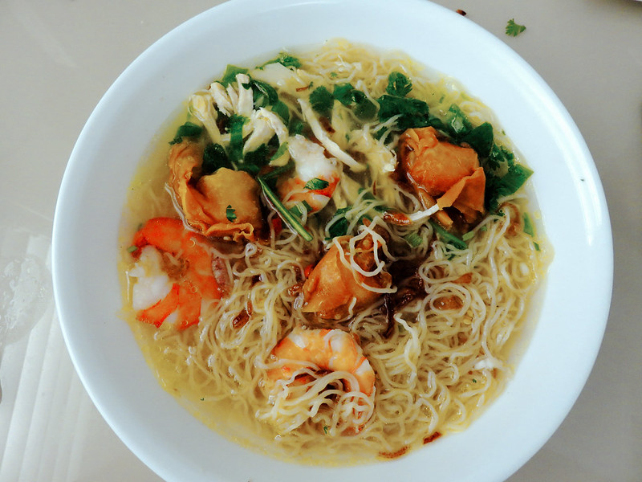

Home
Wonton Mee (云吞面)

Photo shot by Jingke888
Description :
An authentic tasting Cantonese wonton noodle soup with juicy pork and shrimp wontons, thin chewy Hong Kong noodles, and fragrant homemade chicken stock.
Ingredients :
- Leafy vegetables
- Wontons
- Egg noodles (wonton noodles)
- Char Siu (叉燒 Chinese barbequed pork)
- Seasoning
- Garnish
Steps :
- Add all ingredients for seasoning (except water) onto a plate and set aside.
- In a small pot, blanch choy sum stems in boiling water (add a little cooking oil into the water if you want your veggies to be glossy) for about 30 seconds followed by the leaves for about 10 seconds. Remove with a large strainer and set aside.
- Using the same pot, bring back water to the boil and cook wontons for 4 - 5 minutes on medium high heat. Gently nudge the wontons occasionally so that they won't stick to the bottom of the pot. Make sure the wontons are fully cooked before removing all of them from the pot. (I usually test by taking one out to cut open). Set them aside in a bowl. Take 2 tbsp of the liquid used to cook the wontons and add them into the prepared seasoning.
- While you're cooking the wontons, heat up chicken stock in another pot. Turn off heat and pour into the bowl of cooked wontons.
- Bring water to a boil again. Add wonton noodles into a noodle strainer and place it inside the pot. Cook for 15 seconds or slightly longer till noodles is done to your liking. Loosen the noodles with a pair of chopsticks as it cooks. Remove noodles (use a large sieve if not using noodle strainer) and place in a bowl of cold water. Return the noodles to the pot for 5 to 10 seconds just to warm it up. Put the noodles onto the plate with seasoning. Toss the noodles till evenly coated with the seasoning.
- Garnish noodles with blanched choy sum, spring onions, fried garlic bits and sliced char siu. Serve with a bowl of wonton soup and pickled green chilies.